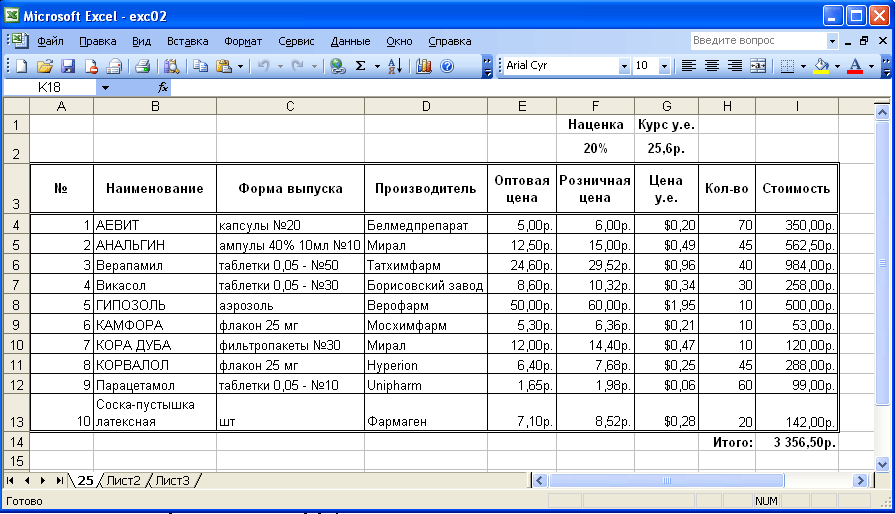

ЛАБОРАТОРНАЯ РАБОТА № EXC-02
РЕДАКТИРОВАНИЕ ДАННЫХ. ФОРМУЛЫ И ССЫЛКИ
Теоретические сведения:
- Использование строки формул
- Редактирование данных в
ячейке
- Редактирование с помощью
команд Найти и Заменить
- Клавиши для правки
содержимого ячеек или строки формул
- Вычисление значений в
формулах
- Ссылки на ячейку или на группу
ячеек
- Различия между
относительными и абсолютными ссылками
- Ввод формулы
- Синтаксис формулы
- Функции
- Формулы массива и их ввод
- Просмотр формул листа и их
значений
Задания:
- Создайте новую книгу Microsoft Excel с именем
"exc02.xls" и сохраните ее в своей папке.
- Используя формулы Microsoft Excel, создайте
макет счета, аналогичный приведенному ниже на рисунке. Параметры счета:
- Курс доллара в примере: 25,6 р. за доллар.
Курс доллара установите:
- В-1: 50 р. за доллар
- В-2: 51 р. за доллар
- В-3: 52 р. за доллар
- В-4: 53 р. за доллар
- В-5: 54 р. за доллар
- В-6: 55 р. за доллар
- В-7: 56 р. за доллар
- В-8: 57 р. за доллар
- В-9: 58 р. за доллар
- В-10: 59 р. за доллар
- В-11: 60 р. за доллар
- В-12: 61 р. за доллар
- В-13: 62 р. за доллар
- В-14: 63 р. за доллар
- В-15: 64 р. за доллар
- Розничная наценка: 20%
- Розничная цена рассчитывается по формуле: <Оптовая
цена>+<Наценка>*<Оптовая цена>.
Для вычислений здесь и далее используйте абсолютные и относительные ссылки!!!
- Цена в у.е. рассчитывается по формуле: <Оптовая цена>/<Курс>.
- Стоимость рассчитывается по формуле: <Оптовая цена>*<Количество>.
- В счете должна быть указана итоговая сумма.
- Лист, содержащий макет счета назовите числом, соответствующим курсу доллара.

- Скопируйте полученный лист в эту же рабочую
книгу и измените курс доллара, сделав его на
10р. больше. Назовите новый рабочий лист соответствующим числом.